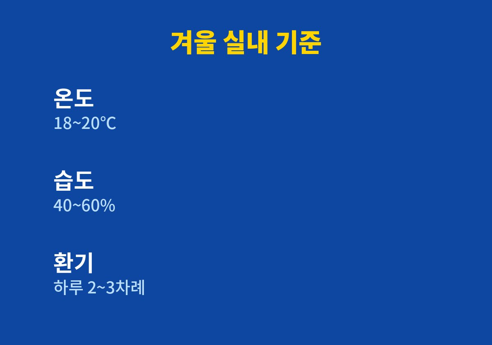

겨울 결로 곰팡이를 꼭 알아야 할 기준과 순서 중심으로 정리한다.
겨울만 되면 창틀에 물방울이 맺히고 벽 모서리에 검은 곰팡이가 피는 집이라면 아래 순서대로 확인하면 된다.
2026년 11월 기준으로 공공기관이 안내하는 실내 온도·습도 기준과 우리 집에서 직접 바꿔 본 습관을 함께 정리했다.
나도 몇 해 동안 아침마다 창틀만 닦았는데, 원인을 알고 나니 닦는 횟수 자체가 줄었다.
겨울은 난방 때문에 공기가 건조한 계절이라 곰팡이와는 거리가 멀다고 생각하기 쉽다.
그런데 실제로는 창가와 벽 모서리, 붙박이장 뒤쪽에 곰팡이가 더 잘 생긴다.
따뜻한 실내 공기 속 수증기가 차가운 유리나 외벽에 닿으면 물방울로 바뀌는데, 이것이 결로다.
추운 날에는 난방비가 아까워 창문을 거의 열지 않게 된다.
그 사이 요리, 빨래 건조, 샤워, 가습기에서 나온 습기가 집 안에 그대로 쌓인다.
결국 습기가 갈 곳을 잃고 가장 차가운 면에 모여 곰팡이의 먹이가 된다.
물방울이 마르기 전에 다시 맺히는 일이 며칠 반복되면 창틀 실리콘과 벽지 뒷면이 늘 젖어 있는 상태가 된다.
곰팡이는 바로 이런 축축한 면에서 자리를 잡고, 한번 퍼지면 닦아도 얼룩이 남는다.
질병관리청 국가건강정보포털도 곰팡이를 알레르기 증상을 일으킬 수 있는 원인 물질 가운데 하나로 설명한다.
아이들이 있는 집이라면 창가 곰팡이를 그냥 두지 않는 편이 마음이 편하다.
질병관리청은 겨울철 적정 실내 온도를 18~20℃, 습도를 40~60%로 안내한다.
나는 저렴한 온습도계를 거실과 아이 방에 하나씩 두고 아침저녁으로 숫자를 보았다.
빨래를 실내에 넌 날이나 가습기를 오래 켠 날에는 습도가 기준보다 훌쩍 올라가는 것을 눈으로 확인할 수 있었다.
숫자를 직접 보기 전에는 우리 집이 건조하다고만 생각했다.
막상 기록해 보니 저녁 식사 준비 후와 빨래를 넌 밤에 습도가 가장 높았고, 다음 날 아침 결로도 그날이 가장 심했다.
결로가 심한 날과 습도가 높은 날이 겹친다는 것을 확인한 뒤로 원인을 찾는 일이 훨씬 쉬워졌다.
| 확인 항목 | 권장 기준 | 우리 집에서 한 일 |
|---|---|---|
| 실내 온도 | 18~20℃ (질병관리청) | 난방 온도를 조금 낮춤 |
| 실내 습도 | 40~60% (질병관리청) | 온습도계로 매일 확인 |
| 환기 횟수 | 하루 2~3차례 (국토교통부) | 아침·저녁·요리 후 환기 |

국토교통부 결로 예방 안내에서는 하루 2~3차례 주기적으로 환기하고, 요리 뒤에는 창문을 열라고 권한다.
나는 오래 열어 두는 대신 맞바람이 통하게 두 곳을 열고 짧게 환기하는 쪽으로 바꿨다.
가습기를 쓴 뒤에도 잠깐 환기하는 것을 습관으로 만들었다.
창문에는 에어캡을 붙이고 창틀 이음새에는 결로 방지 테이프를 둘렀다.
외벽에 붙어 있던 옷장과 책장은 벽에서 조금 떼어 공기가 지나갈 틈을 만들었다.
붙박이장과 신발장 문도 가끔 열어 안쪽 습기를 빼 주니 퀴퀴한 냄새가 줄었다.
겨울에는 실내에 빨래를 너는 일이 많은데, 이것만으로도 집 안 습도가 크게 오른다.
나는 빨래를 거실 한가운데 널고 선풍기를 약하게 틀어 두며, 다 마를 때까지는 가습기를 끈다.
가습기는 잠들기 전 아이 방에만 짧게 켜고 아침에 바로 환기하는 방식으로 바꿨다.
이렇게 습기가 생기는 시간을 겹치지 않게 나누니 아침 창틀 물방울이 눈에 띄게 줄었다.
결로는 닦는 것보다 생기는 원인을 줄이는 쪽이 훨씬 덜 피곤하다.
이미 넓게 퍼진 곰팡이나 벽지 안쪽까지 번진 얼룩은 전문 업체나 관리사무소와 상의하는 것이 안전하다.
다음 글에서는 겨울철 빨래를 실내에서 빨리 말리는 방법을 정리할 예정이다.
※ 2026년 기준 공공기관 안내와 개인 생활 경험을 바탕으로 정리한 글이며, 집 구조와 단열 상태에 따라 효과는 다를 수 있다.